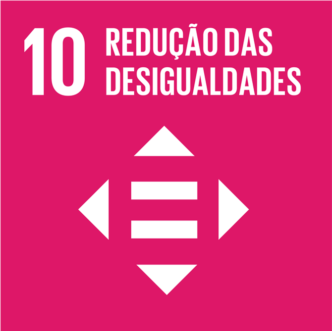

Você sabe o que é uma ODS?
são um plano global adotado pela Organização das Nações Unidas (ONU) em 2015 para alcançar um futuro mais sustentável para todos até 2030. São 17 objetivos interligados que abordam desafios globais como a erradicação da pobreza, a fome zero, a saúde e bem-estar, a educação de qualidade, a igualdade de gênero, a água potável e saneamento, energia limpa e acessível, e muitos outros.
Aqui, vamos apresentar o que é a ODS nº10!
Apresentada pelo número 10, e seu titulo marcante "Redução das desigualdades"
O ODS 10, ou Objetivo de Desenvolvimento Sustentável número 10, foca na redução das desigualdades dentro e entre os países. Ele visa garantir a igualdade de oportunidades e reduzir as disparidades em termos de renda, acesso a serviços e oportunidades, combatendo todas as formas de discriminação.
A desigualdade social acarreta uma série de malefícios que afetam tanto o indivíduo quanto a sociedade como um todo. Entre as consequências mais graves estão:
a pobreza;
a fome;
a violência;
a marginalização;
a falta de acesso a serviços básicos (como por exemplo a saúde, educação e saneamento.)
A desigualdade social no dia a dia pode ser observada em diversas situações, como a disparidade no acesso a serviços básicos, a concentração de renda em poucas mãos e a falta de oportunidades para grupos marginalizados, como as pessoas das comunidades.
No combate à desigualdade, temos:
Redistribuição de renda;
Políticas de inclusão;
Combate à discriminação;
Participação popular...